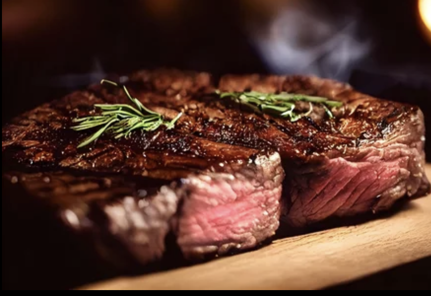

!DOCTYPE html>
Document
Steak

My favorite way to cook a perfect steak!
Ingredients
For the steak:
- 2 ribeye steaks
- 2 tablespoons olive oil
- 2 cloves garlic, minced
- 1/2 medium onion, finely chopped
- 1 basil sprig
- 1/2 teaspoon dried oregano
- Salt and black pepper to taste
- Montreal steak seasoning
Instructions
Prepare Steak
- Preheat your skillet to high heat.
- Allow the garlic, onion and basil to sizzle for a minute or two.
- Preheat oven to 400 degrees
- Brush the steaks with olive oil and season generously with salt, black pepper, and Montreal steak seasoning on both sides.
- Place the steaks on the grill or skillet and cook for about 2-3minutes per side for medium-rare.
- Place skillet in the oven and cook for an additional 5-7 minutes, or until the desired level of doneness is reached.
- Remove the steaks from the heat and let them rest for a few minutes before slicing and serving.
Serve and Check out my other favorite recipes!
Back to Home